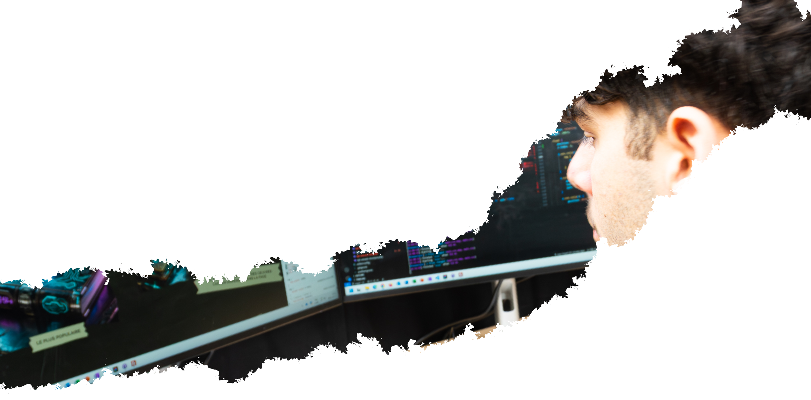

VOIR
PROJETS


À propos
Ici, vous découvrirez qui je suis, mes compétences et mes centres d’intérêt. Vous en apprendrez davantage sur mon parcours, mes forces ainsi que sur ce qui me passionne.
En savoir plus